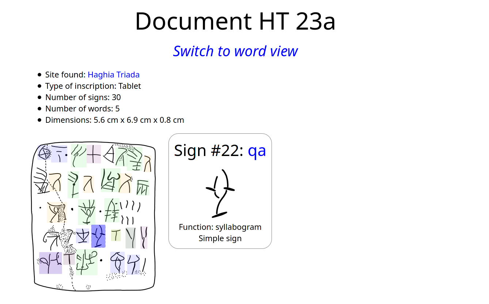
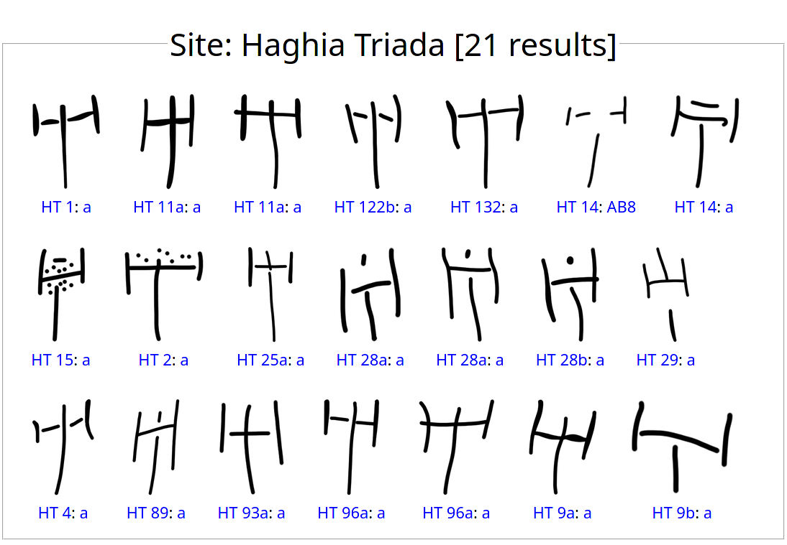
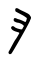
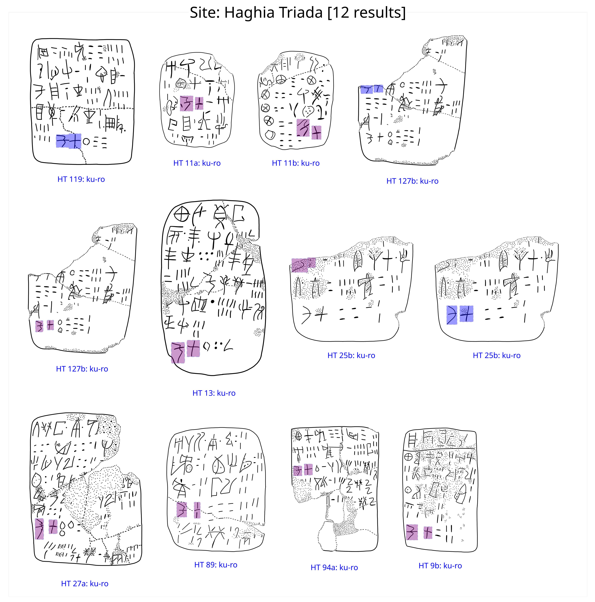
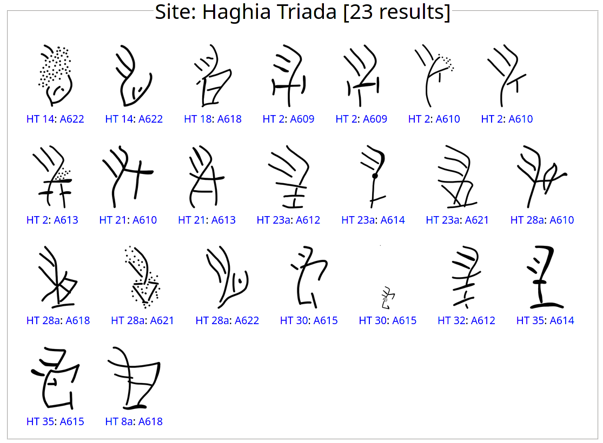
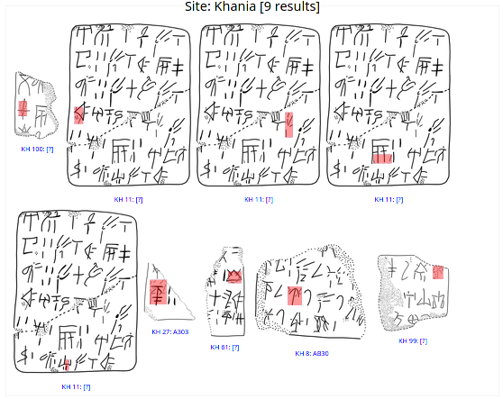
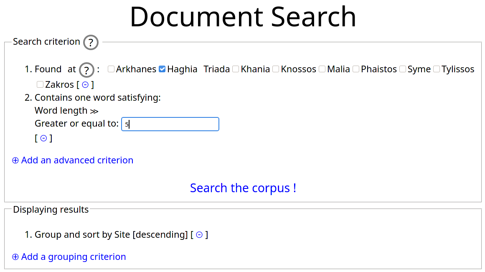

SigLA
The Signs of Linear A: a palæographical database
We present a database of inscriptions written in the (still undeciphered) Linear A script of Bronze Age Greece. We aim at developing a systematic, exhaustive and user-friendly open access database of all Linear A inscriptions. Such a research tool is currently missing, and is essential in order to carry out statistical and palæographical analyses within the epigraphic corpus, only available in print form at the moment.
1 Introduction
This paper presents an interdisciplinary project blending linguistics and computer science and aiming at developing a systematic, exhaustive and user friendly open access database of all inscriptions known to date written in the Linear A script of Bronze Age Greece (ca. 1800-1450 BCE), to date still undeciphered (see sec. 2). Such a research tool is currently missing, and is highly desirable inasmuch as essential in order to carry out statistical and palæographic analyses within the epigraphic corpus, currently available in print form only. In fact, one of the hindrances to decipherment prospects is the current impossibility to carry out any meaningful linguistic statistical analysis and palæographic sign comparison covering the whole corpus of Linear A inscriptions due to the limited resources available. This is especially true with respect to research tools, as all material is only available in (cumbersome) print form. Collecting the Linear A inscriptions in a unified database is of paramount importance to be able to answer sophisticated palæographical and linguistic questions about the Linear A script as well as the language (Minoan) it encodes, which will help us reconstruct the socio-historical context of the Minoan civilisation.
The database will record and display for cross-search comparison: (i) linguistic information: contextual occurrences of signs, their frequency and position within a tablet, as well as individual sign-sequences (i.e. words) and their relative position and frequency within the whole corpus; (ii) palæographic variation: the way in which particular occurrences of signs are drawn on a contextual basis, and how signs vary from inscription to inscription (intra-site analysis), and from location to location (inter-site analysis).
Emphasis will be put on allowing users to see the material evidence (e.g. quickly see all occurrences of a sign or a word in a particular location), in order to ease palæographic analyses that have so far been done tediously by hand by perusing the print corpus of Linear A inscriptions (known as GORILA (Godart and Olivier, n.d.), see sec. 2). Having a digital approach here, where occurrences of signs can be easily compared is key for carrying out comparative analysis. This is greatly simplified by the use of a database, given the very little information we can retrieve solely from the laconic textual structure of the inscriptions as they are (characterised by a great many abbreviations which require a context-driven interpretation of the same signs and/or sign-sequences), as well as the overall poor evidence in terms of quantity and preservation.
In what follows, we will describe the current situation of the Linear A evidence, the state of art in the scholarship and, most crucially, the problems we faced when trying to combine linguistic and palæographic evidence together, as well as the solutions we came up with to develop the features of the database. A first version of the database is available at the address https://sigla.phis.me.
2 Ab antiquo: the Linear A script of Bronze Age Greece
Linear A is a logo-syllabic writing system used in the Bronze Age (ca. 1800-1450 BCE) primarily on Crete, but also sporadically in Mainland Greece and the Aegean islands (for a concise overview of Linear A in context see esp. (Tomas 2010a; Decorte 2018, 18–25); more comprehensive studies are (Schoep 2002; Davis 2014; Salgarella 2020)). Linear A was used by the so-called ‘Minoans’ to write down their language, the ‘Minoan’ language indigenous to Crete. Despite this broader geographical area having been Greek-speaking from around the end of the Bronze Age until today, Minoan still resists decipherment as it does not seem to be related to any of the Indo-European languages so far known (most notably Greek), nor does it to Semitic ones (spoken in the neighbouring areas, esp. Egypt and the Levant) (for a recent and thorough linguistic analysis of Linear A see (Davis 2013, 2014, 156–278). Hence, Linear A remains to date one of the world’s still undeciphered writing systems.
Notwithstanding, we are in a position to be able to at least ‘read’, although with an approximation, and to an extend to interpret inscriptions written in Linear A. This is because Linear A worked as a template for the creation of Linear B, a writing system used on Crete and in Mainland Greece in the time-span ca. 1400-1190 BCE by the Greek-speaking ‘Mycenaeans’. Linear B was successfully deciphered as an early form of Greek in 1952 (for a summary of the decipherment process see esp. (Chadwick 1967; Pope 2008; Judson 2017)). A good number of signs of this ‘Linear Script’ (on this terminology see esp. (Salgarella 2019, 2020)) show the same, or a highly comparable, graphic shape and are therefore called ‘homomorphic signs’. It is argued (lastly (Steele and Meissner 2017)) that some of these signs are also to be taken as ‘homophones’, i.e. having a similar phonetic value. Hence, by applying the homomorphy-homophony principle, the phonetic values we know for Linear B signs are retrospectively applied to Linear A homomorphic signs, allowing for an approximate reading of Linear A sign-sequences.
From a typological as well as functional standpoint, both Linear A and Linear B are logo-syllabic writing systems, meaning that they consist of two functional categories of signs: (i) syllabograms, i.e. phonetic signs representing syllables (only open syllables of the type: single Vowel, Consonant-Vowel or Consonant-Consonant-Vowel: e.g. a, pa, nwa); and (ii) logograms (or ideograms, see esp. (Thompson 2010)), i.e. signs standing for entire words or concepts. This subdivision, however, is more marked in Linear B than it is in Linear A, where a sign can behave either way based on context. The function performed by a sign is often inferable from its position in the inscription: logograms are placed at the end of an entry (after sign-sequences interpretable as words and before numerals). Context is here of considerable help, since most Linear A inscriptions, and almost the entire corpus of Linear B texts, consist of clay documents functioning as records of economic transactions used for the bookkeeping of the Palatial administrations of Late Bronze Age Crete (and Mainland Greece for Linear B). As such, these fall into the broader category of ‘administrative documents’.
The most common type is the clay tablet, recording the flow of incoming and outgoing goods, which was used in both Linear A and Linear B administrative practice (esp. (Tomas 2006a, 2010b, 2006b, 2017b, 2017a)). Moreover, each administrative system had a number of system-specific documents. These are: for Linear A, roundels (understood to have functioned as some sort of receipts), and sealings of different types (esp. (Hallager 1996; Bennet 2008, 10)); for Linear B, labels, nodules and noduli (esp. (Bennet 2008, 17; Hallager 2011; Tomas 2017b, 65–68)). Unlike Linear B, whose use was restricted to administrative purposes only, Linear A is also attested on a variety of other supports used in different contexts, falling into the general label of ‘non-administrative documents’. These inscriptions are understood to be mostly religious in nature (e.g. the ‘libation formula’, see esp. (Karnava 2016)). At present the database only contains administrative documents, more precisely the Linear A tablets found at the most prominent sites on Crete. However, the long-term plan is to implement the database by adding all inscriptions recovered so far in order to make it as comprehensive and exhaustive as possible.
3 Ab initio: developing a new tool
3.1 The standard corpus of Linear A inscriptions
At this point, one may wonder, where and how are the Linear A inscriptions available to examine? The extant evidence (both administrative and non-administrative documents, on any supports) is presented in the five volumes of (Godart and Olivier, n.d.), published by Louis Godart and Jean-Pierre Olivier some 40 years ago. This still remains the only corpus of Linear A inscriptions, solely available in print form (although scans have recently been put online by publishers). However, more evidence has been coming up since the publication of the corpus, and has been published in individual articles (an addition to GORILA is in preparation by Freo and Zurbrach (2011)). As it stands, the corpus shows a black-and-white photograph of each document, followed by a drawing and two transcriptions: the first transcription is faithful to the original layout of the text (to ease sign identification in their original position on the actual document), while the second transcription shows standardised sign shapes along with a functional arrangement of the text (for easier interpretation of the record).
The corpus was a considerable achievement for the time, since it made the evidence accessible to the academic community for the first time, allowing scholars to reach an accurate and detailed interpretation of all the the material since then unearthed. However, as it is, the corpus does have limitations: first, it is not intended for a wide readership, and is only accessible to those who already have a basic knowledge of Linear A given that neither a transliteration nor a transnumeration of the inscription is given, but only a transcription (Linear A signs are usually best known by their classification number, e.g. AB 60, allowing quicker retrieval in the standardised sign list). Therefore, in order to read a text the sign shapes shown in the transcription have to be checked against the standardised list of Linear A signs (available at the beginning of Volume 5, pp. xxii-xxvii): Linear A is composed of some 180 simple signs (representing a graphic and phonologic unit); and some 164 complex (or composite) signs (which are the combination of two or more simple signs), on top of these there are some 30 fractional signs. A quite reliable transliteration of the texts, although subjective in places, is given by Younger (2000) based on (Godart and Olivier, n.d.) transcriptions. This contribution has so far proved to be useful, especially for linguistic analyses; however, a mere transliteration leaves out palæographical information. Second, another limitation of the corpus is its very format: a printed edition does not allow to carry out any statistical and comparative analysis of signs and sign-sequences. This resulted in slowing down comparative linguistic and palæographical research (unless one painstakingly collects their own dataset). A digital approach, therefore, is clearly needed to make the most of the evidence and promote further linguistic and palæographical research allowing for complex searches. In fact, we may want to see which variant of a sign is used on a given document, how frequent such a variant is within the whole corpus of inscriptions or within a selected set of documents (e.g. site-specific or document-type-specific analyses), which variant distribution patterns can be observed, or to simply have an overall appreciation of the palæographical features characterising the Linear A evidence coming from a given find-place.
3.2 A digital approach: challenges and solutions
Turning the printed corpus into a digital database raised a few challenges. The first and more important challenge is that of copyright, as the images included in the corpus are not free to use. To circumvent the copyright issues surrounding the original drawings we decided to make our own drawings of each document, based on the standard corpus of inscriptions and as faithful to the originals as possible. This long process turned out to be fruitful, as it allowed us to separate distinctly each and every sign drawn on the tablet surface, to classify each sign individually and to mark its position within the inscription. As a result, drawings can be annotated with information that would not have been possible to extract automatically for comparative purposes. As an example, our database includes for display and analysis epigraphical features such as erasures (see sec. 4). To make the drawing process as smooth as possible, we opted to use Krita, a graphics editor, and turn the corpus images into multi-layered images where each sign belongs to a different layer. Basic metadata can be encoded in these files, therefore our digital corpus becomes a set of Krita files, one per document of the corpus.
Another problem we had to face during the design of the database was classifying the data. Because of the nature of evidence, there is a lot of uncertainty: uncertain readings, unknown word boundaries, uncertain function performed by signs in isolation (e.g. logograms or transaction-signs?). Moreover, the standard terminology used in the scholarship is itself ambiguous to some extent, and part of the work of designing the database was to resolve such ambiguity. For instance, the word sign can refer to the standardised shape of a sign (e.g. AB 01) or to a particular occurrence of that standardised sign on a particular document, or to a graphic variant of the sign (at times difficult to recognise as such). Digitalising the corpus forced us to impose the strict inflexibility of formal languages onto the flexibility of natural languages, and forced us to make some choices in cases where the evidence is not clear.
For all these reasons, we decided to develop our own software to deal with the database. The software has two main components:
Import. This component turns the corpus of Krita files into a JSON database, and produces image files for each document, and for each sign attestation.
Interface. We then developed a web interface, written in OCaml and compiled in JavaScript that entirely runs in the browser. The interface allows to visualise and search the data, and is presented in sec. 4.
We choose this architecture to favour simplicity and openness. The database is easily accessible and usable by other people outside the interface if so they wished, and JSON is one of the best supported data description language. Moreover, the website can be downloaded and run locally. This also ensures a very small load on the server that does not run any computation and ensures that SigLA (or copies thereof) can be easily hosted. The main trade-off is performance as this is much slower than a relational database would be. We believe this is not a problem as the evidence for Linear A is relatively small (less than two thousands documents).
One other challenge in developing the interface was to allow flexibility in the queries that can be expressed, while still remaining user-friendly and simple for the most frequent queries. For the expressiveness part, we decided to represent queries as typed λ-terms, which are functional programs, built on primitive terms representing properties of the objects manipulated by the database. For instance, types include Word, Sign, Document, and properties include words, of type Document → Word List. Using types, we built an interface allowing the user to build the λ-term incrementally by showing them the possible properties that are available at any point in the query (see sec. 4.2). This proved to be expressive and easy to extend by adding more primitives.
4 Ad hoc: main features
4.1 Visualising the data
The first feature that SigLA offers is the possibility to inspect individual documents of the corpus along with their metadata. Metadata include: find-place, document typology (clay tablet, roundel, …) and dimensions, density of information on the writing surface (total number of signs, total number of words). On the document displayed, individual sign occurrences are highlighted in different colours for ease of reference: when hovering with the mouse on a particular sign, information about it is displayed, such as its transnumeration (i.e. its classification number as standardly set out in (Godart and Olivier, n.d., Volume V, pp. xxii-xxvii)), its possible transliteration (i.e. approximate phonetic value), its function on the tablet (syllabogram, logogram, transaction-sign, fraction). Each sign is coloured according to its function: shades of blue for syllabograms (phonetic signs which are part of a word), green for logograms (more or less pictographic signs which stand for entire words or concepts), orange for fractions (fractional signs accompanying numbers), yellow for transaction signs (individual signs occurring in isolation usually on top of a tablet with a word divider on either side; see (Schoep 2002, 39, 135, 140; Salgarella 2020, 50–54)); and red for erasures (instances where the traces of a previously cancelled signs are still visible on the writing surface). However, at times the precise function a sign performs in a given context is unclear. In such cases, we decided to allocate the sign the function that it is most likely to perform based on context, but this choice may well be subject to revision. Moreover, we have come across a number of unclassified signs (in GORILA these are referred to with a question mark in the context where they appear and are not included in the standardised sign list), which we have labelled as such and are searchable in the database for further contextual analysis. In SigLA we use the question-mark for signs of doubtful reading or unreadable (instances where traces of a sign are visible, but the sign can not be recognised). Also in this case, all instances of unreadable signs across the whole corpus can be viewed.
The visualisation of the data as described above is displayed when viewing the document in sign view, illustrated in fig. 1. In addition to this setting, the document is also available in word view, showing coherent sign-sequences (words). Here only the syllabograms forming a word are highlighted (leaving aside logograms, transaction-signs and numerals): hovering on a sign selects the word it belongs to and clicking on such word allows the user to see other occurrences of the selected word across the corpus (and its relative position on each document for comparative purposes).

In sign view when clicking on the sign number, the user is redirected to the palæographical chart of the sign, which displays all occurrences of that sign across the corpus. This is one of the main goals of SigLA: to be able to compute automatically such charts, which are key to palæographical analysis and before had to be produced by hand by researchers. An example of such chart for sign AB 08 (phonetic value /a/) is displayed in fig. 2 (the figure only presents the chart relative to the site of Haghia Triada, but in SigLA all sites are available).

SigLA also comes with a sign list that displays all signs occurring in the corpus, again following the accepted sign classification set out in (Godart and Olivier, n.d., Volume V, pp. xxii-xxvii). However, unlike in (Godart and Olivier, n.d.), the sign list of SigLA does not use a standardised (hence, somewhat abstract) shape for each sign, but rather a particular occurrence of such sign that has been considered as representative by the authors. In the case of composite signs, their decomposition into simple signs (individual constitutive components) is also displayed, following the interpretation proposed in (Godart and Olivier, n.d.) and with a refined notation introduced by the first author (Salgarella 2020, 54–59).
As last remark, we also decided to add a Map of sites in the Homepage of SigLA, showing all sites that have yielded Linear A evidence (both administrative and non-administrative). This is a reference tool that shall help users to locate sites on Crete, as well as to evaluate at first sight the distribution of find-places on the island.
4.2 Searching the database
SigLA allows searching the corpus by providing three types of searches: (i) sign search: search for sign occurrences, (ii) word search: search for sign-sequences, (iii) document search: search for specific documents. SigLA supports simple searches of signs (simple or in composition) or words. Some examples are given below.
Sign search: The sign search function allows users to look for a sign of their choosing either across the whole Linear A corpus or within a customisable subset of evidence. The end result of such search could be either palæographical charts showing all the occurrences of the sign sought for in isolation for comparative purposes (as in fig. 2), or its contextual occurrence and position on complete documents with the occurrence of the sign highlighted. This search is of particular importance for the evaluation of sign frequency and use across sites and for assessing palæographical variation.
A similar search can be carried out with respect to erasures, which are here treated as signs. It is possible to run a search for erasures in order to assess their frequency and contextual occurrences (at times it is possible to understand the reason that led to the cancellation of a previously written sign). The result of such search is illustrated in (fig. 5), showing the erasures attested on a set of documents from Haghia Triada.
Finally, in sign search it is also possible to look for simple signs in combination: more precisely, for all attestations of a simple sign when in combination with other ones to produce composite signs (in Linear A a simple sign can be combined with multiple others). By way of example, let us take simple sign A 302 (

): by using the nomenclatureA302+in the sign search box and running a search, we can view all attestations of composite signs having A 302 as one of their constitutive components (fig. 4).Word search: Let us assume we wanted to view all attestations of the word ku-ro (understood to mean ‘total’) within the Linear A corpus. By running a word search we end up seeing all contextual occurrences of ku-ro, as illustrated in fig. 3 showing all attestations on the documents from Haghia Triada (in the database all sites are displayed). This viewing setting is also useful to carry out comparative analysis of the position of the same sign-sequence over different documents so as to get insights into the meaning of Linear A words (our knowing the meaning of ku-ro is more of an exception than the rule).



Document search: The document search option allows to look for a particular document or a set of documents (customisable by the user) within the all corpus or within a given site (or a selected combination of multiple sites). It is also possible to narrow down the search to a specific document type (e.g. tablet, roundel, label, etc.) so as to evaluate its frequency and distribution across sites. The end result of this search is the viewing of entire documents, which are displayed without additional highlight on specific features. Given that the metadata included in SigLA also contain information about document dimensions, this search allows to see and evaluate at first sight the relative proportions and sizes of all the documents within the corpus, allowing for comparative analysis of their sizes (as well as some pinacological features).
Quick search: Finally, for easier searches, a quick search option is also available (displayed on the top bar), which can be used to quickly jump to a particular document (e.g. HT 12), sign (e.g. AB 60), or location (e.g. Knossos), without engaging with any of the aforementioned search interfaces.
These simple searches offer already a lot of improvement on the print corpus of Linear A inscriptions. However, as explained in sec. 3.2, SigLA also offers a number of more complex and advanced searches. Such searches are done by supplying a list of criteria that must all be met by the objects sought after. Such criteria are expressed using properties of the objects and can be quite sophisticated. In fig. 6, we show how one would enter the query “Search for documents in Haghia Triada that have a word of length greater than five”. This search has two criteria (location and existence of such a word). The search query is composed interactively, and the user is guided at each step by viewing what are the possible properties they can use in the query. As shown in fig. 6, results can be grouped and sorted in arbitrary ways, the default option being to sort them by site.

5 Ad maiora: future improvements
As it stands, the database is still under construction, although all the main features have already been developed in this first version. We are currently working towards implementing the database with a number of additional features, described in what follows.
In order to ease reading and interpretation of the Linear A documents displayed in the database, we are planning on adding a full transliteration of each inscription by using (approximate) phonetic values (based on comparison with Linear B, see discussion in sec. 2). At present such transliterations have only been made available by John Younger in his website ‘Linear A Texts and Inscriptions in Phonetic Transcription and Commentary’ (Younger 2000). Younger’s transliterations are based on (Godart and Olivier, n.d.), and often improved with his own readings. However, Younger’s website is mostly concerned with Linear A texts, much less so with the physical appearance of documents. Hence, palæographical features are not displayed. We hope that in this respect SigLA will complement, as well as integrate, Younger’s work. In addition to the phonetic transliteration of Linear A inscriptions, we would also like to show a further transcription in Unicode characters. This feature may be of particular interest to users who are less familiar with Linear A signs (and their palæographical variation), as Unicode characters will allow users to recognise at first sight which signs are shown on a given document (as displayed in their standardised shape) and to appreciate their palæographical variation as contextual occurrences. In this respect, SigLA also presents itself as a didactic tool.
Another useful implementation will be the addition of a section for notes or comments after each document. This section shall accommodate information that will ease interpretation of inscriptions and texts, given that in most cases this process is problematic to say the least (due to the fragmentary state of preservation of a good many documents, our imprecise knowledge of the meaning of sign-sequences as well as the low frequency of cross-site sign-sequences, the multifunctionality of signs based on context, etc.). In this way, users will be guided to make sense of the texts and transcriptions as these appear by using their own judgement. Moreover, whenever possible, references will be made to individual studies dedicated to each document displayed or of interest for its interpretation. In fact, at present there is no ‘Handbook’ of Linear A, where to learn all the basics to interpret an inscription and situate it in its broader archaeological and historical context.
The addition of photographs of original documents remains a most cherished desideratum for the time being, as contingent upon copyright permissions. We wish SigLA (or any alternative similar database) will one day host high-resolution (ideally 3D) images of Linear A documents for more thorough and accurate first-hand inspection of their palæographical and pinacological features.
6 Ad aeterna: new reseach pathways
To conclude, we would like to pinpoint some of the potential applications and future pathways of research SigLA will allow.
First, it shall be possible to refine the Linear A sign repertory, by being able to clearly differentiate between signs and their variants and at the same time reaching a better global understanding of the structural characteristics of the writing system. This will ultimately lead to the appreciation of how many signs do represent the core of the writing system (in this respect see also (Salgarella, n.d.)).
Second, SigLA shall allow to carry out systematic research into scribal activity, resulting in a more thorough and reliable identification of scribal hands, at present still not clearly identified nor identifiable (in Godart and Olivier (n.d.) V pp. 83-113 Godart put forward possible scribal hand attributions, but without explaining the reasons of his choices; on scribal hand identification see esp. Raison and Pope (1971), Militello (1989), Tomas (2011)), as well as getting an idea of the overall number of scribes at work at a given site. By consequence, we should also be able to come to identify possible scribal/writing ‘traditions’ and their spread across time and space. This, in turn, will allow to throw light on matters pertaining to the acquisition and transmission of the writing system as well as practice, enabling us to assess the extent of literacy and the level of specialisation in writing and administrative practices in Minoan Crete. These are highly debated questions that scholars have already been addressing, exploring and trying to answer with respect to Linear B. However, we are severely lagging behind with respect to Linear A.
Third, in the long term the database will also display information about the physical appearance and manufacture of the Linear A documents included, such as erasures (already searchable on SigLA), presence or absence of ruling lines to guide writing, presence of word-dividers, density of writing on the writing surface as well as textual arrangement, size comparison, presence of cuttings (if a tablet was cut after being inscribed). All this data will give us key information about the tablet manufacture process as well as the editing of the text itself.
Last but not the least, all these features, taken all together, shall enable us to carry out a more sophisticated and thorough palæographical comparison for the evaluation of (degree of) palæographical similarities and differences both across sites and within a site, with the possibility for each and every user to narrow their analysis down to specific features by customising their own dataset based on their very own research interests.
This unique research tool, and the ensuing pathways it shall enable, will help shed light on all above areas of investigation, which are still terra incognita to a great extent. The database, in fact, shall allow us to make the most of the existing evidence, to overcome the limits set by traditional print corpora and to push combinatory linguistic and palæographical research a step further. It is our hope that SigLA will make a significant contribution to the field by proving a useful open-access interactive tool allowing researchers more accurately to look into the palæographical, epigraphic, pinacological, as well as linguistic features of the Linear A writing system of Bronze Age Crete. Progress and advancement in these areas will be a major achievement for the study of the Linear A script, the Minoan language, and the cultural backdrop within which the civilisation inhabiting Crete and the Aegean islands flourished in the Late Bronze Age.
Bennet, John. 2008. “Now You See It; Now You Don’t! The Disappearance of the Linear A Script on Crete.” In The Disappearance of Writing Systems:Perspectives on Literacy and Communication, edited by John Baines, John Bennet, and Stephen Houston, 1–29. London; Oakville.
Chadwick, John. 1967. The Decipherment of Linear B. Cambridge: Cambridge University Press.
Davis, Brent. 2013. “Syntax in Linear A: The Word-Order of the ’Libation Formula’.” Kadmos 52 (1): 35–52.
———. 2014. Minoan Stone Vessels with Linear A Inscriptions. Leuven: Peeters.
Decorte, Roeland Pieter-Jan Ewoud. 2018. “The Origins of Bronze Age Aegean Writing: Linear a, Cretan Hieroglyphic and a New Proposed Pathway of Script Formation.” In Paths into Script Formation in the Ancient Mediterranean, edited by Silvia Ferrara and Miguel Valério, 13–50. Studi Micenei Ed Egeo-Anatolici, Nuova Serie, Supplemento 1.
Freo, Maurizio Del, and Julien Zurbrach. 2011. “La Préparation d’un Supplément Au Recueil Des Inscriptions En Linéaire a. Observations à Partir d’un Travail En Cours.” BCH 1 (135): 73–97.
Godart, Louis, and Jean-Pierre Olivier. n.d. Recueil Des Inscriptions En Linéaire A. Vols. I-V.
Hallager, Erik. 1996. The Minoan Roundel and Other Sealed Documents in the Neopalatial Linear A Administration. Vols. I-II. Aegaeum 14. Liège-Austin.
———. 2011. “On the Origin of Linear B Administration.” In Proceedings of the 10th Cretological Conference, edited by Maria Andreadaki-Vlasaki and Eleni Papadopoulou, A1:317–239.
Judson, Anna. 2017. “The Decipherment: People, Process, Challenges.” In Codebreakers & Groundbreakers, edited by Anastasia Christophilopoulou, Yannis Galanakis, and James Grime, 15–29. Cambridge: Charlesworth Press.
Militello, Pietro. 1989. “Gli Scribi Di Hagia Triada.” PP 44:2, 126–47.
Pope, Maurice. 2008. “The Decipherment of Linear B.” In A Companion to Linear B: Mycenaean Greek Texts and Their World, edited by Yves Duhoux and Anna Murpurgo Davies, 1:1–23. Leuven: Peeters.
Raison, Jacques, and Maurice Pope. 1971. Index Du Linéaire a. Vol. 41. Incunabula Graeca. Roma: Edizioni dell’Ateneo.
Salgarella, Ester. 2019. “Drawing Lines: The Palaeography of Linear a and Linear B.” Kadmos 58 (1-2): 61–92.
———. 2020. Aegean Linear Scripts: Rethinking the Relationship Between Linear A and Linear B. Cambridge: Cambridge University Press.
———. n.d. “Mix and Match: A Combinatory (Re-)Classification of Linear a Signs.”
Schoep, Ilse. 2002. The Administration of Neopalatial Crete. A Critical Assessment of the Linear A Tablets and Their Role in the Administrative Process. Salamanca: Ediciones Universidad de Salamanca.
Steele, Philippa M., and Torsten Meissner. 2017. “From Linear B to Linear a: The Problem of the Backward Projection of Sound Values.” In Understanding Relations Between Scripts: The Aegean Writing Systems, edited by Philippa M. Steele, 93–110. Oxford/Philadelphia: Oxbow Books.
Thompson, Rupert. 2010. “In Defence of Ideograms.” In Études Mycéniennes 2010: Actes Du Xiiie Colloque International Sur Les Textes égéens, 545–61.
Tomas, Helena. 2006a. “Comparing Linear a and Linear B Administrative Systems: The Case of the Roundel and the Elongated Tablet, Colloquium Romanum: Atti Del Xii Colloquio Internazionale Di Micenologia.” In Colloquium Romanum: Atti Del Xii Colloquio Internazionale Di Micenologia, edited by Sacconi A., Del Freo M., Godart L., and Negri M., II:767–74. Pasiphae 2.
———. 2006b. “Linear a Tablet ≠ Linear B Tablet.” In Proceedings of the 10th Cretological Conference, edited by Maria Andreadaki-Vlasaki and Eleni Papadopoulou, A1:331–43.
———. 2010a. “Cretan Hieroglyphic and Linear A.” In The Oxford Handbook of the Bronze Age Aegean (ca. 3000-1000 Bc), edited by Eric H. Cline, 340–55. Oxford: Oxford University Press.
———. 2010b. “The Story of the Aegean Tablet: Cretan Hieroglyphic - Linear A - Linear B.” BICS 53 (2): 133–34.
———. 2011. “Linear a Scribes and Their Writings Styles.” Pasiphae: Rivista Di Filologia E Antichità Egee V: 35–58.
———. 2017a. “From Minoan to Mycenaean Elongated Tablets: Defining the Shape of Aegean Tablets, Aegean Scripts.” In Proceedings of the 14th International Colloquium on Mycenaean Studies, Copenhagen, 2-5 September 2015, edited by M.-L. Nosch and H. Landenius Enegren, I:115–26. Roma.
———. 2017b. “Linear B Script and Linear B Administrative System – Different Patterns in Their Development.” In Understanding Relations Between Scripts: The Aegean Writing Systems, edited by Philippa M. Steele, 57–68. Oxford/Philadelphia: Oxbow Books.
Younger, John. 2000. “Linear a Texts and Inscriptions in Phonetic Transcription.” 2000. http://people.ku.edu/~jyounger/LinearA/.